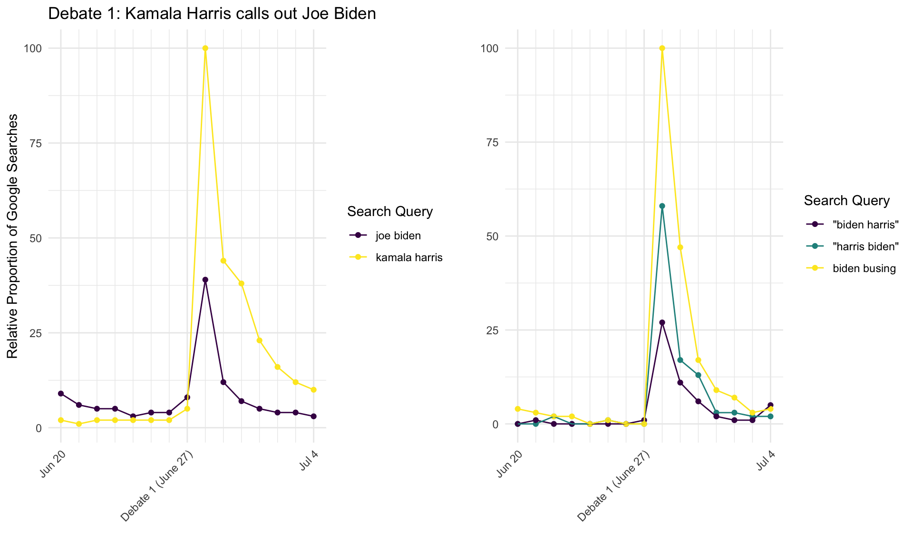

Debate Impact on Google Search Behavior
Introduction
Google search data is increasingly being viewed as an important predictor of election outcomes. It is thought that the Americans who make searches may be a more representative sample of the voting population than that reached by polling organizations, and that people may be more honest in the privacy of their own computer than in a poll response. Main events from each of the first four Democratic Debates were selected for investigation with Google Trends data, and search volume for relevant terms has been plotted for the week immediately preceding and immediately following each debate. These analyses are considered a secondary predictor of debate performance alongside polling performance.
Arguably the most notable advocate of the use of Google Trends data in election applications is Seth Stephens-Davidowitz, former data scientist at Google and author of “Everybody Lies,” a collection of his research utilizing primarily Trends data. Stephens-Davidowitz has examined questions such as the role of racism in Barack Obama’s 2008 and 2012 election performance, how Google data can show voter reactions to rumors and ad campaigns. Several of his ideas are incorporated into the following analyses, although his work has been almost entirely focused on predicting presidential elections and these analyses look exclusively at the current Democratic primaries.
It is important to note that it is impossible to know an individual’s motivation for making a particular search, so these analyses are exclusively exploratory. Additionally, Google Trends yeilds relative search proportions rather than absolute search counts. This means that all searches are scaled from 0 to 100, with 100 representing the day during the period of interest during which the search query of interest made up the greatest proportion of all Google Searches. Comparisons between graphs should therefore be made with caution. Google Trends does allow the comparison of up to 5 search queries at once, where all results are shown on a shared scale. Graphs with multiple queries where generated in this manner and all included terms are relative to each other so can be compared. Given this scaling system, some searches (such as those for candidate names) have such greater volume than other, less frequently searched terms, that they mask any trends in these lower-volume queries. When this occurred, these high-volume terms were considered in separate panels.
Debate 1: June 27, 2019
During the first debate, Kamala Harris called Joe Biden out for his previous cooperation with segregationalist Senators and his opposition to school busing programs. She made a tense moment personal by sharing her experience as a young girl brought to her California public school every day by a busing program. Biden defended himself by arguing that he only opposed busing mandated by the Department of Education.

There is a clear, sharp spike in relative search volume on June 28th, the day immediately following the debate. Search volume for Kamala Harris surpassed that for Joe Biden, perhaps because Kamala, a lesser-known candidate, was able to draw significant and negative attention to Biden, an extremely well-known candidate. Harris’s search advantage was sustained in the days following the debate. Search volume for “harris biden” is also higher than for “biden harris”, and it is reported by Seth Stephens-Davidowitz in his book “Everybody Lies” that voters tend to subconsciously place the name of the candidate they support first in searches including two candidate names. This change in search volume is an indication that the busing comments increased support for Kamala Harris and hurt Joe Biden’s popularity among voters.
Debate 2: July 30, 2019
When Bernie Sanders enthusiastically advocated for Medicare for All and spoke to all it would cover, Tim Ryan interjected to say that Bernie couldn’t know exactly what it would cover. Sanders shot back, emphatically saying “I wrote the damn bill!” in one of the night’s most memorable moments.

Search interest in Bernie spiked immediately following the debate, although this increase was not sustained. Although Bernie’s comeback was witty and memorable, it was used in a less controversial situation than Harris’s comments toward Biden and may not have resonated long-term with voters. It can be seen, however, that people were searching the phrase “I wrote the damn bill” immediately following the debate, which shows that this moment certainly did get some attention from voters.
Debate 3: September 12, 2019

Debate 4: October 15, 2019
Yang and Universal Basic Income

Harris and Reproductive Rights

Yang vs. Harris